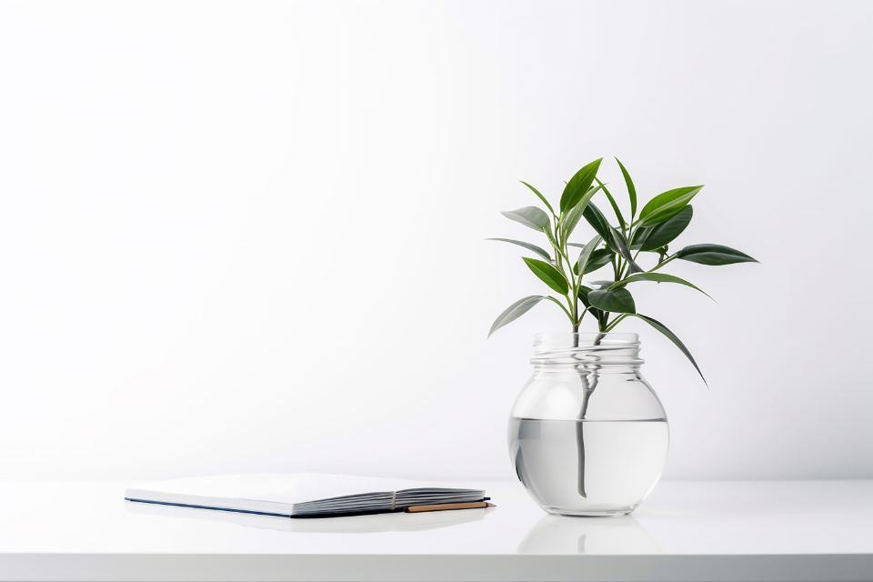
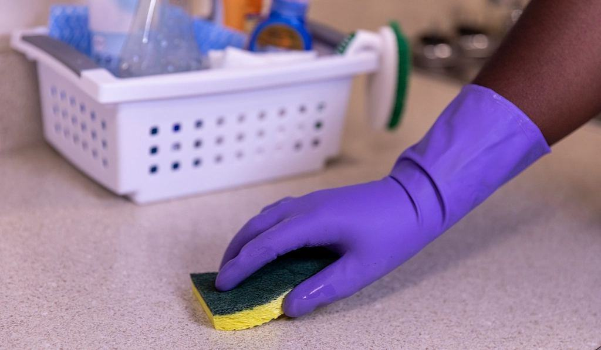
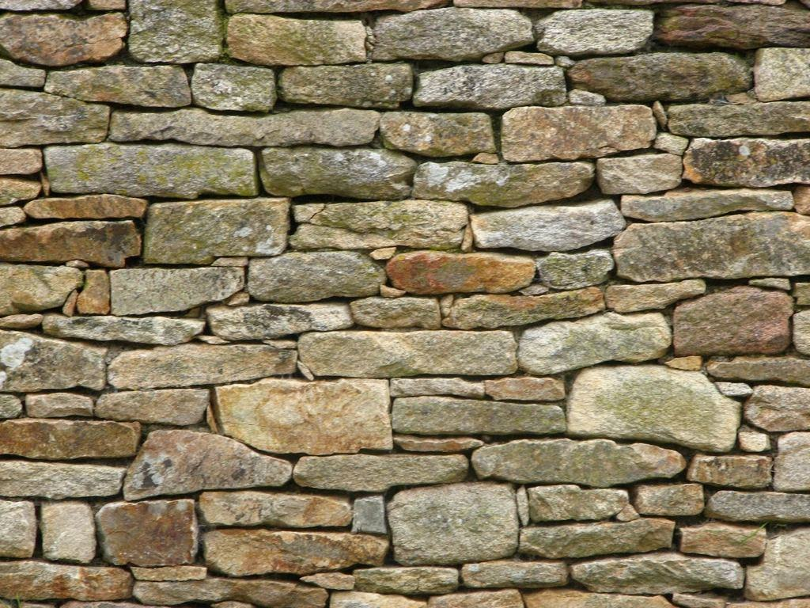

Vilken byggnad ska vi ta hand om?
- 01
Kyrkstädning
Kyrkrum, sakristia och vapenhus, med särskild omsorg om bänkar, golv och textilier.
Läs mer - 02
Museer och utställningar
Dammsugning av montrar, föremål och golv med HEPA-filter och penslar.
Läs mer - 03
Herrgårdar och slott
Salonger med tapeter, förgyllning och kakelugnar som inte tål vatten.
Läs mer - 04
Hembygdsgårdar
Vårstäd före sommaröppning och vinterstängning efter säsongen.
Läs mer - 05
Skadedjursinventering
Fällor och kontroll av ängrar och malar, med rapport till antikvarien.
Läs mer - 06
Städning efter renovering
Finstäd när hantverkarna är klara, innan inventarier ställs tillbaka.
Läs mer - 07
Utbildning i varsam städ
Halvdagskurser för kyrkvaktmästare och museivärdar.
Läs mer - 08
Boka besiktning
Ingrid går igenom byggnaden och föreslår en städplan.
Läs mer

Det mesta som förstörs i en kyrka förstörs inte av tiden. Det förstörs av en hink vatten och för mycket välvilja.

Om städning i gamla miljöer
Hittar du inte svaret? Ring eller mejla oss.
01Varför kan inte en vanlig städfirma städa kyrkan?
Den kan, men vanliga metoder och medel skadar ofta äldre material. Vatten sväller trä, mikrofiber kan rispa förgyllning och många rengöringsmedel lämnar rester som bryter ner färg.
02Vad använder ni för utrustning?
Dammsugare med HEPA-filter och reglerbart sug, getpenslar och mjuka borstar, torra moppar och destillerat vatten där fukt behövs.
03Hur ofta ska en kyrka städas?
Det beror på användningen. En kyrka med gudstjänst varje söndag behöver ungefär tio städningar per år, en sommarkyrka två till fyra.
04Samarbetar ni med antikvarier?
Ja, alltid. Städplanen stäms av med församlingens eller museets antikvarie, och vi rapporterar allt vi upptäcker.
05Åker ni utanför Dalarna?
Ja, till södra Hälsingland och norra Västmanland. Längre bort tar vi resekostnad och ibland övernattning.
06Vad kostar det?
Timpriset är 560 kronor exklusive moms. En normalstor sockenkyrka tar en arbetsdag för två personer.
Från besiktning till rapport
- 01
Besiktning med antikvarie
Ingrid går igenom byggnaden, gärna tillsammans med er antikvarie eller stiftets bebyggelseantikvarie.
- 02
Skriftlig städplan
Ni får en plan som anger metod och frekvens för varje yta och material.
- 03
Städning efter kalendern
Vi planerar efter högtider, öppettider och säsong, inte efter veckodag.
- 04
Rapport efter varje besök
Vi noterar sprickor, fukt, skadedjur och annat som antikvarien bör känna till.
Församlingar och föreningar

”Vi har aldrig haft en städfirma som frågat vad golvet är behandlat med. Varsam kom med svaret själva.”
Lars-Erik D.Rättvik 
”Rapporten om ängrar räddade vår folkdräktssamling. Ingen av oss hade sett något.”
Margit O.Leksand 
”De rör inte en enda monter utan att fråga först. Det är precis så det ska vara.”
Johan H.Falun
Illustrationsbilder

Där varsamhet är metoden
- 1742Vårt äldsta golv i ordinarie skötsel
- 9anställdaAlla utbildade av en konservator
- 0 dlVatten på omålade trägolv
Ansvarar ni för en kyrka, ett museum eller en gammal gård? Låt oss gå igenom den tillsammans.

 01
01Konservatorsutbildning
Grundaren har kandidatexamen i kulturvård med inriktning textil från Göteborgs universitet.
 02
02Riksantikvarieämbetets råd
Våra rutiner följer myndighetens vägledning för städning och skötsel av kulturhistoriska interiörer.

03Integrerad skadedjurskontroll
Personalen är utbildad i IPM, förebyggande kontroll av skadeinsekter i samlingar.
 04
04Försäkring för kulturföremål
Ansvarsförsäkring med särskilt skydd för skador på inventarier och konstföremål.
Byggnader i vår vård

01 / 06PågåendeRättvik · KyrkstädningSockenkyrka vid Siljan
Tio städningar per år, med extra omsorg om golvet från 1742 och altartavlan.
 02 / 06PågåendeFalun, Grycksbo · Herrgårdsstäd
02 / 06PågåendeFalun, Grycksbo · HerrgårdsstädBruksherrgård i Grycksbo
Salonger med 1800-talstapeter och sex kakelugnar, städade varannan vecka.
 03 / 06UtförtFalun · Museistäd
03 / 06UtförtFalun · MuseistädGruvmuseet vid Östanforsån
Montrar, mineralsamling och golv i en utställningshall på 600 kvadratmeter.
 04 / 06UtförtLeksand · Vår- och höststäd
04 / 06UtförtLeksand · Vår- och höststädHembygdsgård i Leksand
Nio timrade byggnader med textilier, kistor och kakelugnar.
 05 / 06UtförtHedemora · Städning efter renovering
05 / 06UtförtHedemora · Städning efter renoveringStenkyrka i Hedemora
Finstäd efter putslagning innan orgel och inventarier ställdes tillbaka.
 06 / 06UtförtFalun, Vika · Vinterstängning
06 / 06UtförtFalun, Vika · VinterstängningBergsmansgård i Vika
Vinterstängning med täckning av möbler och fällor för skadeinsekter.